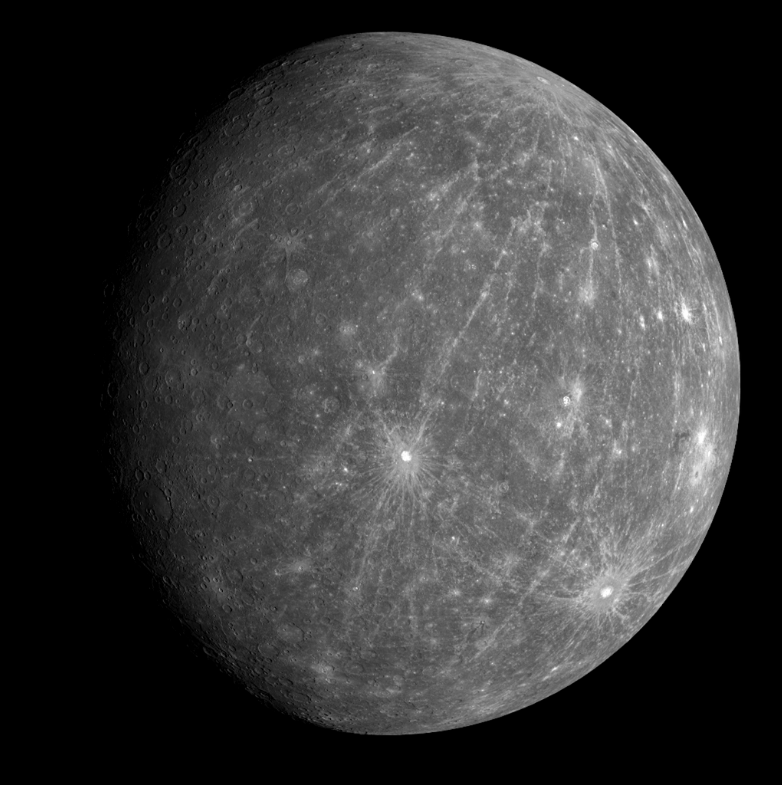
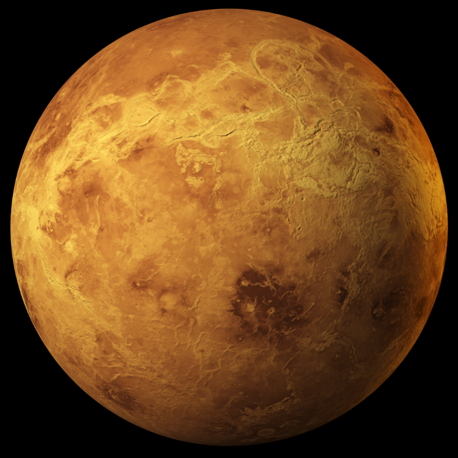
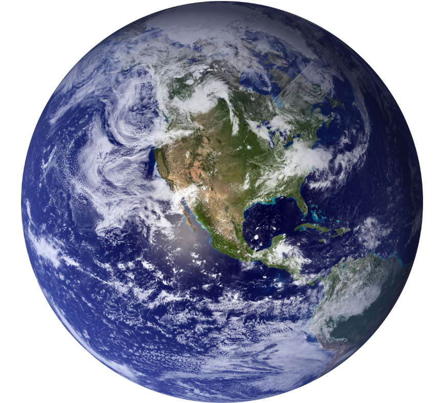
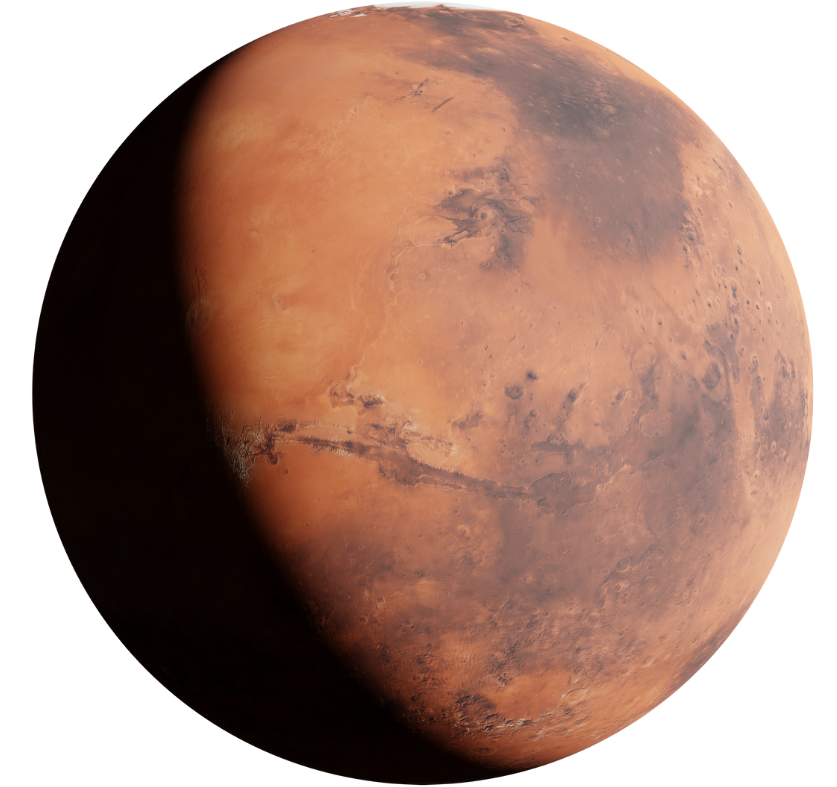
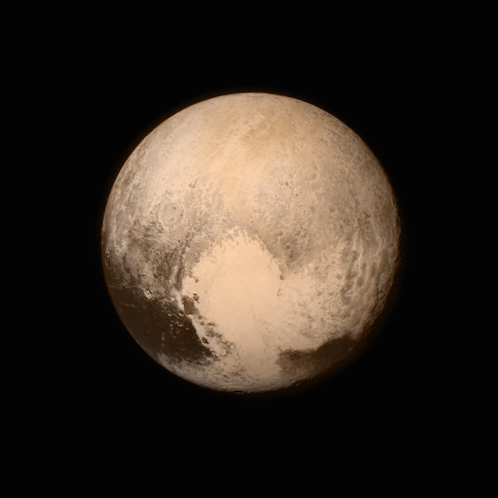

All information sourced from The Planets
When we refer to terrestrial planets get their names from Latin, as terrestrial and telluric are from the Latin words for Earth, (Terra and tallus), and are used as these planets have a composition that is similar to that of the Earth.
We can easily identify the terrestrial planets because they have solid and rocky surfaces, being much smaller but much denser than an opposing gas giant planet. As a result of the main composition being silicate rocks and metal, the terrestrial planets have solid surfaces with several different layers in the interior, all built around a highly compressed, molten metal core.
Terrestrial rings also differ from gas giants in that they feature no rings, vastly fewer moons, secondry atmospheres (in most cases), and different magnetic fields.
The terrestrial planets in our solar system all exist in the inner half, being located much closer to the Sun, and being seperated from the Jovian Gas Giants by the Main Asteroid Belt.
Terrestrial planets exist in the inner solar system due to their location to the sun, as they receive more intense solar radiation than their gaseous counterparts. Solar winds also blow off lighter elements from the inner plants, leaving only the remaining heavy materials.
Mercury is only a third of Earth's size and is the smallest of the planets in our solar system. As the closest neighbor of the Sun, any potential moons and atmosphere have been burned away, or lost due to Mercury's smaller gravitational field.

Astronomers believe that there is water around Mercury's north and south poles, but that planet still receives too intense solar radiation for a human to ever live there.
Mercury is the fastest-moving planet in our solar system, moving at about 47 kilometers per second (29 miles per second). It also has the shortest orbital period, as while a year on Earth takes about 365 days, a year on Mercury is only 88 Earth days long.
Venus, unlike Mercury, does have an atmosphere. However, this atmosphere is made up of thick layerings of carbon dioxide, and is so thick that it obscures observations of the planet's surface. It is also responsible for making Venus the hottest planet in our solar system.

Venus is sometimes referred to as "Earth's Twin" because of its size. However, its atmosphere would be very toxic to humans, and make it uninhabitable.
Venus is visible to the naked eye at night, as it is the second-brightest celestial body in our night sky after our Moon.
Venus is unique in that it rotates backwards. Because of that, the Sun is seen as taking an opposite course when being viewed on Venus, meaning it rises in the west and sets in the east. Venus is also unique in its slow axial rotation, as it takes 243 Earth days to complete one rotation. However, the orbit of Venus only takes 225 Earth days, meaning a day on Venus is longer than a year on Venus!
While we have theorized about other plants across the Milky Way and beyond that could support life, the Earth is the only planet we know where life has flourished, which makes our home plant unique among *thousands of millions* of others as it meets the perfect ingredients for life to exist.

Water comprises about 70% of the Earth's surface. Our atmosphere is rich and lively, being compposed of roughly 78% nitrogen, 21% oxygen, and other trace gases such as carbon dioxide. This complex and thick atmosphere, as well as our strong magnetic field, protects the Earth from solar radiation. The shift of tectonic plates also allows the carbon cycle of our planet to be beneficially renewed and recycled.
While both Mercy and Venus have no moons, Earth has claim to a moon of its own. This planetary satellite impacts the tides in the oceans, and is used by both humans and animals to track location and time.
Mars is a dusty desert planet and is the fourth planet from the Sun. Nicknamed "The Red Planet", Mars appears the way it does due to the iron rich material crust. As those surface iron minerals are exposed to the elements, the iron rusts and makes the whole planet appear red.

Mars is said to have the ingredients for life, such as organics and water ice. It has polar ice caps and trace amounts of methane have been found on the planet. On the surface, Mars is heavily craterd, yet still contains the tallets mountain in our entire solar system, Olympus Mons.
A day on Mars, also known as a sol, is a roughlt the same length as a day on Earth.
Mars has itself two moons, Phobos and Deimos, the most out of our terrestrial planets.
While Pluto is not in the inner half of our solar system, (and no longer claimed as a planet), it is sometimes argued as a terrestrial planet.
Composed mostly of ice and hard rock, scientist have theorized that when Pluto first formed, it was covered in oceans and could have harbored life, leaning more towards a terrestrial planet rather than the icey gaseous planet it was known as before.
While Pluto is smaller than many planetary moons, and is known as a dwarf planet, Pluto itself has five known moons, named Charon, Styx, Nix, Kerberos, and Hydra.

Return to Home Page